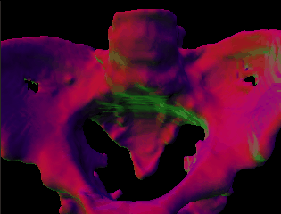
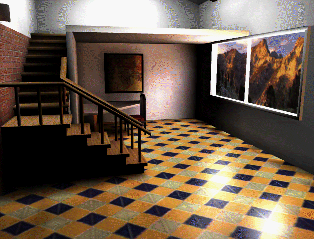
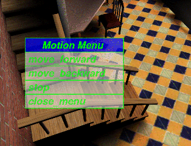

Eighteen professors from five departments decide to work together and submit a request for a virtual reality system. Suppose further that the administration actually believes that this is a wonderful idea and approves the proposal, provided that the virtual reality system is put to use in the classroom. The faculty eagerly agree to this condition, and to their amazement they acquire the funds to purchase an SGI Onyx 2 Reality Engine and 10 SGI Indigos.
The above scenario is not some introduction to a John Grisham suspense novel, but a real story at Clemson University. Recently Steve (D.E.) Stevenson from the Department of Computer Science at Clemson University came to the Geometry Center and talked about applications of Geometry with computers. Steve mentioned briefly how various departments had been using the virtual reality system they acquired, and showed specific examples of what they had done with them.
The departments using the system range from those which traditionally might use virtual reality, such as the Computer Science department, the Mechanical Engineering department and the Architecture department, to fields not generally associated with the technology such as the Biomedical Engineering department and the Performing Arts department. All these disciplines' projects use the technology in ways that create images and objects that otherwise would take a long time to construct, or not be feasible to construct at all.
In particular, software is currently under development for Mechanical Engineering students that extends CAD/CAE software to virtual reality. Instead of clicking keystrokes to try to alter perspective views, a user is able to wear a helmet and by moving their head around are able to view an object as if it were before them. Moreover one is able to look through different layers of an object to view how the device is operating internally. Although these are all things that CAD/CAE software allows, the virtual reality system gives a user a more natural way to view an object, which accordingly allows one to easier ask the question, "what if?"
Some of the other projects involving engineering are simulation-based design, multipurpose design optimization and visualization in High Performance Computing-Computer Formulated Design structures. Lastly one professor dreams of creating a simulation of the famous Tacoma Narrows bridge collapsing so that Civil and Mechanical Engineers can fully appreciate the consequences of their errors.
In the Biomedical Engineering department some of the projects mentioned are use of virtual reality for viewing of X-RAY's and MRI's, using stereolithography to make prototypes of joints, and even having students perform test surgery.
In the Computer Science department some of the projects range from creating a toolkit for non-computer science designers, rendering and 3-D lighting, viewing non-euclidean geometries, and modeling for resource management.
Projects in the Architecture department include creating a virtual reality model of campus, and a laboratory on building design.
People in the Performing Arts department use virtual reality for Stage Lighting and Stage Design Courses.
Of the above projects, two of the more interesting applications common to both Mechanical Engineering and Biomedical Engineering, involve stereolithography or 3D printing. One is able to design or input given data about an object and actually create a prototype made out of polymers of the object viewed in the virtual reality. One interesting example is that of an image of a Pelvis taken from an MRI, piped into the virtual reality software so that one is able to view it, and then a model of the bone is manufactured using the polymer machine. The following figure is a virtual reality image of this pelvis.

Similarly, a model of a "ship in a bottle" was created using CAD/CAE software viewed through the virtual reality software, and then made.
The virtual reality machines nicely compliment the polymer machine. One is able to thoroughly view an object before making a prototype, thus saving on the production costs of making a prototype.
The Computer Science department has also created some interesting programs. Two software programs are titled Steve's Room and Oliver's Room. Steve's Room is a program which allows the user via the helmet to look around a room, turn on lights, and place objects by voice or mouse commands. Oliver's Room also is a high resolution room. In this room, one can see in high resolution, an Impressionist painting on the wall, a tiled floor, and a window with a view of mountains. The following picture is a view of Oliver's Room.

As with Steve's Room, the user is able via voice commands to move about the room. The next picture is an image of what one might see through the helmet after a request to move has been made.

The visual results from these projects are amazing, both in a practical sense and in a pure aesthetic sense. The images created are useful in understanding the structure of an object, as well as being suitable for framing. However, what is equally impressive is that various departments were able to get together and pool their resources so that this system could be acquired. By doing this, they have provided themselves, and more importantly, their students, an opportunity to use computer systems today that will no doubt be commonplace in the future.
![[HOME]](vr_files/home.gif) The Geometry Center Home Page
The Geometry Center Home Page
Comments to:
webmaster@www.geom.uiuc.edu
Created: November 21 1994 ---
Last modified: Jun 18 1996